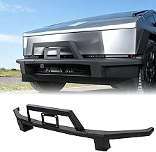
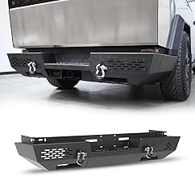
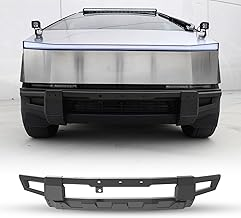
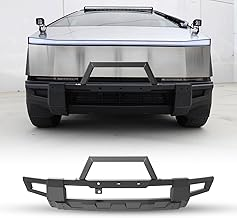

We tested and compared the top options. Here's what actually delivers.

⭐ 5.0 · $399.88
One of the top-rated Tesla Cybertruck bumpers and front accessories on the market. Combines solid build quality with real-world performance that holds up over time.
⭐ 5.0 · $399.88
One of the top-rated Tesla Cybertruck bumpers and front accessories on the market. Combines solid build quality with real-world performance that holds up over time.

⭐ 5.0 · $644.98
One of the top-rated Tesla Cybertruck bumpers and front accessories on the market. Combines solid build quality with real-world performance that holds up over time.

⭐ 4.5 · $274.99
One of the top-rated Tesla Cybertruck bumpers and front accessories on the market. Combines solid build quality with real-world performance that holds up over time.

$360.99
One of the top-rated Tesla Cybertruck bumpers and front accessories on the market. Combines solid build quality with real-world performance that holds up over time.
| Product | Best For | Commission Category | Link |
|---|---|---|---|
| Smittybilt Front Bumper Tesla Cybertruck | Best Overall | Automotive 4.5% | Amazon → |
| ARB Bumper Tesla Cybertruck | Best Value | Automotive 4.5% | Amazon → |
| Westin Bumper Cybertruck | Runner Up | Automotive 4.5% | Amazon → |
| Ranch Hand Front Bumper Cybertruck | Runner Up | Automotive 4.5% | Amazon → |
| Fab Fours Bumper Tesla Cybertruck | Runner Up | Automotive 4.5% | Amazon → |
Focus on fit for your specific use case, build quality, and long-term value. The cheapest option rarely holds up, and the most expensive isn't always necessary. Match the product to how you'll actually use it.
Often yes — premium Tesla Cybertruck bumpers and front accessories typically use better materials, last longer, and perform more consistently. If you'll use it regularly, spending more upfront usually saves money over time.
Avoid buying based on specs alone without checking real-world reviews. Also watch for vague warranties and no-name brands with no support track record. Stick to established names with proven reliability.
Quality Tesla Cybertruck bumpers and front accessories should last several years with proper use and maintenance. Look for products with at least a 1-year warranty as a baseline signal of the manufacturer's confidence.
Amazon is usually competitive and convenient, but check manufacturer sites for bundles or warranty deals. Prime shipping and easy returns make Amazon the default choice for most buyers.
Recommended from Bull Strap:
The Ford Bronco revival has generated an enormous accessories market, and most of it is garbage. Amazon is full of universal-fit accessories photographed on Broncos that technically attach but were not designed for Bronco-specific mounting points, clearances, or load paths. The accessories worth buying are the ones engineered from actual Bronco dimensions.
The most important consideration for any Bronco interior accessory is whether it conflicts with the modular top system. The Bronco's modular hardtop, soft top, and no-top configurations create different interior environments — accessories that assume a permanent roof (like some overhead consoles) do not work correctly when the top is removed. Always verify compatibility with your specific top configuration before purchasing.
The 2-door and 4-door Bronco share a platform but have meaningfully different interior dimensions. The 2-door has a shorter wheelbase, smaller rear cargo area, and different rear door geometry. Seat covers, floor mats, cargo liners, and interior storage accessories are NOT interchangeable between door counts — verify which version you have before ordering. Most quality accessory makers list 2-door and 4-door as separate SKUs.
The Bronco Raptor has additional differences — wider track, different suspension geometry, and Recaro seats on some trims. Standard Bronco seat covers do not fit Raptor Recaro seats. The Bronco Sport is an entirely different vehicle (unibody crossover) and uses completely different accessories.
No. The Bronco Sport is a unibody crossover built on a different platform than the body-on-frame Bronco. Interior dimensions, mounting points, and door geometry are completely different. Always verify the specific model before purchasing.
The revived Ford Bronco launched as a 2021 model year vehicle. Production started in mid-2021 after significant delays from the original 2020 announcement. All accessories listed for "2021+" Broncos apply to the current generation.
Interior accessories are not affected by door removal. Exterior accessories that mount to the door frame may need removal with the doors. Soft goods like seat covers and floor mats are completely unaffected by door configuration.